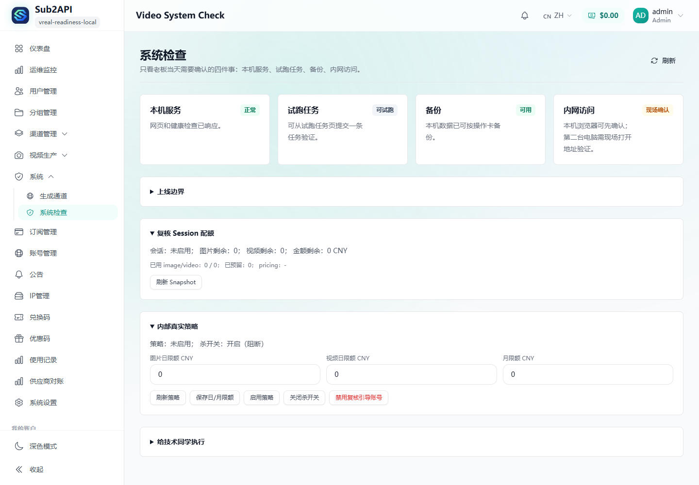
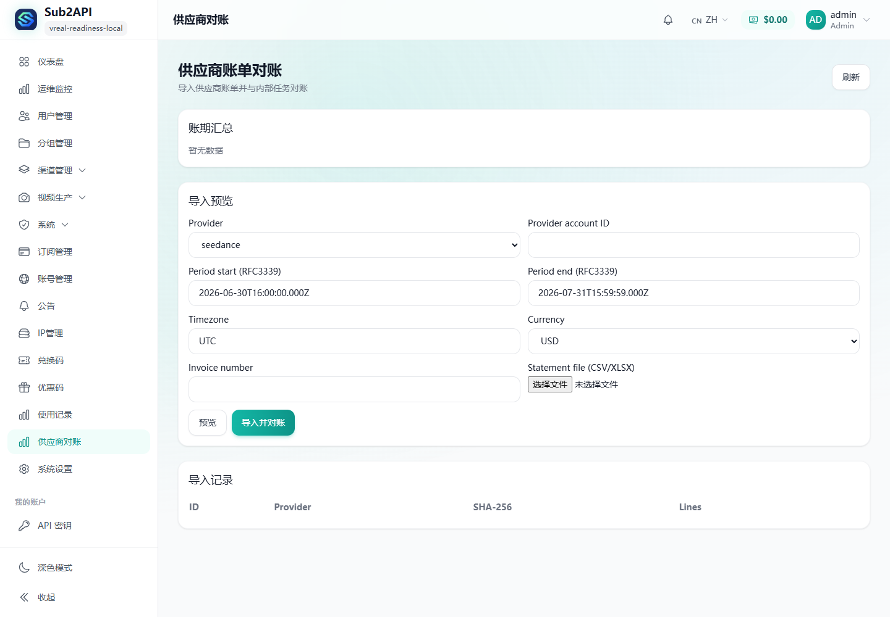
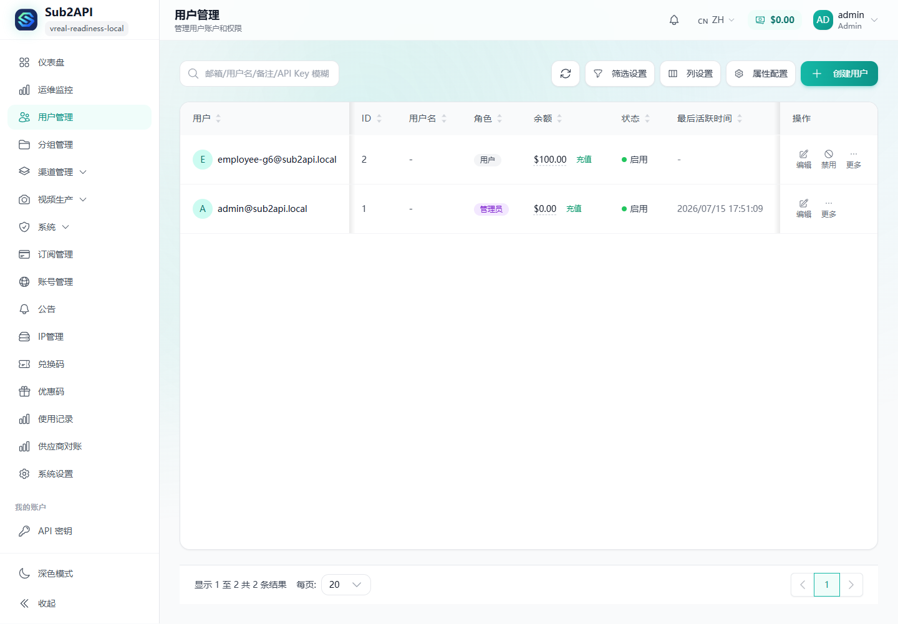
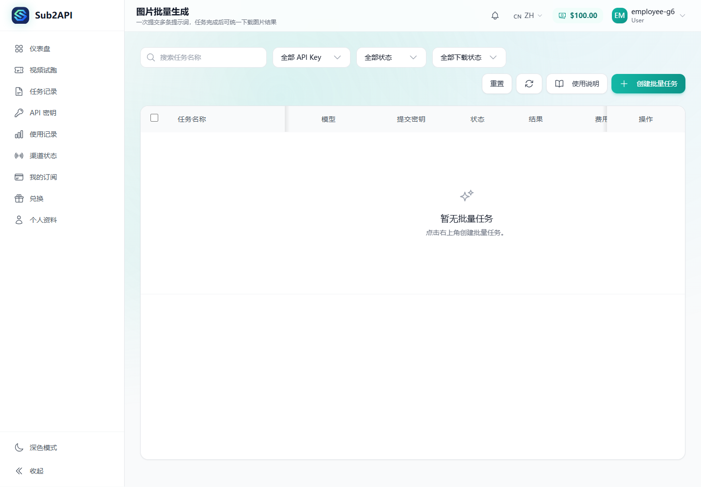

Sub2API 内部真实可用收口审查包
READY_FOR_USER_REAL_TEST / 待复核 更新时间：2026-07-15
目标与执行边界
执行目录：D:\sub2api-trunk
分支：wujie/video-capture-moat-20260702
最终 HEAD：b1756b0f（镜像代码证据：8296c2a6）
会话预算延续：图片 1/4、视频 2/4、累计预留 ¥20 / ¥60。未重置计数文件。
未 push、未部署、未使用生产用户数据、未公开服务；本地 G6 栈仅绑定 127.0.0.1:18080。开发阶段未调用真实付费 Provider；审查包不含密钥值。
HEAD 镜像
镜像：sub2api:real-readiness-8296c2a6
镜像 ID：sha256:ad432520f38c60fe67e85aaab7878ab47c901e12847fb5b2eacb9d972e1864fb
健康：/health ok；应用进程 UID 1000；端口 127.0.0.1:18080。
关键变更
| 提交 | 作用 |
|---|---|
61e776fd | succeeded 终态无资产 URL 不得结算（G0 前置）。 |
d6a35110 / e5855818 | 共享 RealCreateGuard 接入产品 create chokepoint；Seedance CNY 预留与错误消毒。 |
fd0cc5f0 / a9e8e12f | mock / review_real / internal_real 路由与策略预留。 |
5de80939 | Gemini 产品 DB 0-create 恢复 integration（脱敏 fixture）。 |
c9c05084 | Gemini 图片持久资产、预览、下载、再次引用。 |
05b40e49 / 9af957d3 | Provider 账单导入/规范化/匹配；重复 SHA-256 拦截。 |
8a8d1ea2 | domain_outbox Claim 集成测试隔离，修复共享 DB 污染。 |
8296c2a6 | 关闭 API-key 真实创建绕过 review_only；图片策略 USD→CNY；确认弹窗与 allow_member 保全。 |
无付费验证统计
| 门禁 | 结果 |
|---|---|
| go vet + backend packages | PASS |
WSL Ubuntu-24.04 go test -tags=integration ./internal/repository | PASS（executed，无 skip 冒充） |
| frontend lint / vue-tsc / vitest / build | PASS（944 tests） |
| Docker delivery image | PASS |
| 三角色浏览器 mock 闭环 | 9 截图 / 79 API 2xx / secretHits 0 |
能力矩阵（当前）
| 能力 | 自动证据 | 用户真实证据 |
|---|---|---|
| 预算硬门 | 单元/并发/fail-closed + 产品 chokepoint | 待页面剩余额度真人验证 |
| 员工视频 create | fake/mock 链 + create 门禁测试 | 待 1 次真实 Seedance |
| 员工图片 create | 产品 mock + 资产/模式测试 | 待 1 次真实 Gemini |
| Gemini 产品链 | 0-create recovery fixture + 资产归档 | 待真实创建走产品 DB |
| Provider 对账 | 合成 CSV/XLSX fixtures | 待真实账单上传 |
| 三角色 UX | 本轮 9 张截图 | 待人眼确认生成内容 |
浏览器截图（本轮）









用户真实测试卡
状态：READY_FOR_USER_REAL_TEST / 待复核
- 确认 Windows 用户环境已存在临时凭证（presence-check only）。管理员 bootstrap 页显示两个
review_only账号已装配，但不显示值。 - 登录员工账号，选择“一次真实复核”。
- 创建 1 张 Gemini 低规格图片；确认 task ID、终态、预览、下载、再次引用。
- 创建 1 条 Seedance 5 秒 9:16 视频；确认 task ID、create=1、终态、播放、下载、再次引用。
- 管理员上传 Gemini 与 Seedance 真实账单明细，确认匹配/差异；若无账单则保留“待账单复核”。
- 老板确认总览、成员排行、余额与对账状态符合实际。
- 管理员先确认至少一个非
review_only正式内部 Provider 账号已配置并通过无费用连接检查，再决定是否启用internal_real（指定成员/分组日/月上限；kill switch 可见）。无正式账号时保持关闭。 - 立即禁用
review_only账号并废弃临时 Gemini/Seedance 密钥。
立即停止条件：鉴权异常、密钥回显、重复 create、未知状态、费用超过剩余 ¥40、URL 不安全、账务不一致、资产不可下载。
风险与回滚
- 真实复核默认关闭；紧急先关 session capability / kill switch，再
git revert。 - 对账差异不自动改用户余额。
- 资产迁移只新增表与读取优先级；回滚应用保留资产文件。
- 历史真实 Provider 证据（2026-07-12）仍有效，本轮未重复付费调用。
文件索引
docs/reviews/LATEST_REVIEW_PACKAGE.html docs/reviews/assets/real-product-readiness-20260715/* docs/superpowers/codex-handoff/deliverables/2026-07-15-REAL-PRODUCT-READINESS-closeout.md docs/superpowers/codex-handoff/CODEX_TASK_REAL_PRODUCT_READINESS_20260715.md 00_START_HERE.md 02_CURRENT_REALITY_STATUS.md docs/goals/03_CURRENT_GOAL.md